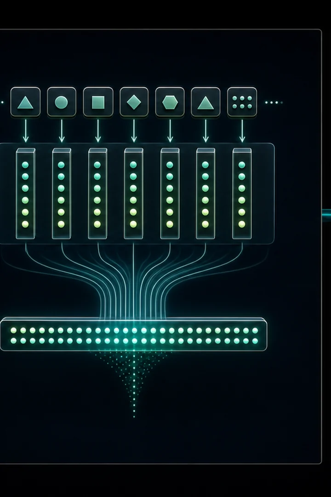
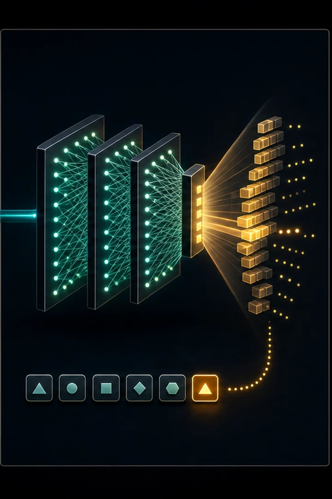

The leap. Each character becomes a small learned vector (an embedding), and the model looks at a window of previous characters at once. Suddenly the output is full of real names: lucas, isabella, liam, ella.
Embeddings are the single most important idea in modern LLMs — every token in GPT is one. The architecture here is just the XOR net from #00 with look-up → flatten → feed bolted onto the front.
This is the 2003 Bengio neural language model, and it introduces the idea that powers everything after it: the embedding. Each token is mapped to a dense, learned vector instead of a one-hot. Because similar tokens can learn similar vectors, the model shares statistical strength across contexts — directly fighting the curse of dimensionality that makes count-based n-grams blow up as the context grows.
The second idea is a fixed context window: concatenate the embeddings of the previous n tokens and feed them through an MLP (the same tanh network as #00) to predict the next one. Now the prediction depends on several tokens jointly, so generated names look real. The remaining limitation — a fixed, small window — is what attention later removes.



import numpy as np
WORDS = [
"emma", "olivia", "ava", "isabella", "sophia", "mia", "amelia", "harper",
"liam", "noah", "oliver", "william", "james", "benjamin", "lucas", "henry",
"anna", "anya", "maria", "elena", "nina", "sara", "leo", "max", "ella",
"grace", "chloe", "zoe", "lily", "aria", "ruby", "ivy", "luna", "nora",
]
CHARS = ["."] + sorted("abcdefghijklmnopqrstuvwxyz")
STOI = {c: i for i, c in enumerate(CHARS)}
ITOS = {i: c for c, i in STOI.items()}
VOCAB = len(CHARS) # 27
BLOCK_SIZE = 3 # how many previous characters we condition on
EMB_DIM = 8 # size of each character's embedding vector
HIDDEN = 64 # neurons in the hidden layer
def build_dataset(words):
"""Slide a window of BLOCK_SIZE over each word to make (context -> next)."""
xs, ys = [], []
for word in words:
context = [0] * BLOCK_SIZE # start padded with '.' (index 0)
for ch in list(word) + ["."]:
target = STOI[ch]
xs.append(context)
ys.append(target)
context = context[1:] + [target] # slide the window forward
return np.array(xs), np.array(ys)
def softmax(logits):
logits = logits - logits.max(axis=1, keepdims=True)
exp = np.exp(logits)
return exp / exp.sum(axis=1, keepdims=True)
class MLP:
def __init__(self, seed=0):
rng = np.random.default_rng(seed)
# C: the embedding table — one row (vector) per character.
self.C = rng.normal(size=(VOCAB, EMB_DIM)) * 0.1
# Hidden layer takes the flattened context embeddings as input.
fan_in = BLOCK_SIZE * EMB_DIM
self.W1 = rng.normal(size=(fan_in, HIDDEN)) * (1 / np.sqrt(fan_in))
self.b1 = np.zeros((1, HIDDEN))
self.W2 = rng.normal(size=(HIDDEN, VOCAB)) * 0.1
self.b2 = np.zeros((1, VOCAB))
def forward(self, X):
# X is (N, BLOCK_SIZE) integer indices. Look up each one's embedding...
self.emb = self.C[X] # (N, BLOCK_SIZE, EMB_DIM)
# ...then flatten the context into a single vector per example.
self.flat = self.emb.reshape(X.shape[0], -1) # (N, BLOCK_SIZE*EMB_DIM)
self.h = np.tanh(self.flat @ self.W1 + self.b1) # hidden activations
self.logits = self.h @ self.W2 + self.b2
return self.logits
def train(self, X, Y, epochs=2000, lr=0.1):
n = len(X)
for epoch in range(epochs):
# --- Forward ---
logits = self.forward(X)
probs = softmax(logits)
loss = -np.mean(np.log(probs[np.arange(n), Y] + 1e-9))
# --- Backward (chain rule, same shape as neural_network.py) ---
d_logits = probs.copy()
d_logits[np.arange(n), Y] -= 1
d_logits /= n
d_W2 = self.h.T @ d_logits
d_b2 = d_logits.sum(axis=0, keepdims=True)
d_h = (d_logits @ self.W2.T) * (1 - self.h ** 2) # tanh' = 1 - tanh^2
d_W1 = self.flat.T @ d_h
d_b1 = d_h.sum(axis=0, keepdims=True)
# Gradient flows back into the embedding table too.
d_flat = d_h @ self.W1.T
d_emb = d_flat.reshape(self.emb.shape)
d_C = np.zeros_like(self.C)
np.add.at(d_C, X, d_emb) # scatter-add grads to the rows we used
# --- Update ---
for param, grad in [(self.W1, d_W1), (self.b1, d_b1),
(self.W2, d_W2), (self.b2, d_b2),
(self.C, d_C)]:
param -= lr * grad
if epoch % 200 == 0:
print(f"epoch {epoch:4d} loss {loss:.4f}")
def generate(self, rng, max_len=20):
context = [0] * BLOCK_SIZE
out = []
for _ in range(max_len):
logits = self.forward(np.array([context]))
probs = softmax(logits)[0]
idx = rng.choice(VOCAB, p=probs)
if idx == 0:
break
out.append(ITOS[idx])
context = context[1:] + [idx]
return "".join(out)X, Y = build_dataset(WORDS)
print(f"dataset: {len(X)} examples, each looking at {BLOCK_SIZE} prev chars\n")
model = MLP()
model.train(X, Y)
print("\nGenerated names:")
rng = np.random.default_rng(1)
for _ in range(12):
print(" " + model.generate(rng))dataset: 192 examples, each looking at 3 prev chars epoch 0 loss 3.2892 epoch 200 loss 2.1395 epoch 400 loss 1.8208 epoch 600 loss 1.5662 epoch 800 loss 1.3213 epoch 1000 loss 1.1154 epoch 1200 loss 0.9576 epoch 1400 loss 0.8510 epoch 1600 loss 0.7846 epoch 1800 loss 0.7440 Generated names: lucas olioer nly isabella liam aria anna ruby lucas clily rubasa ella